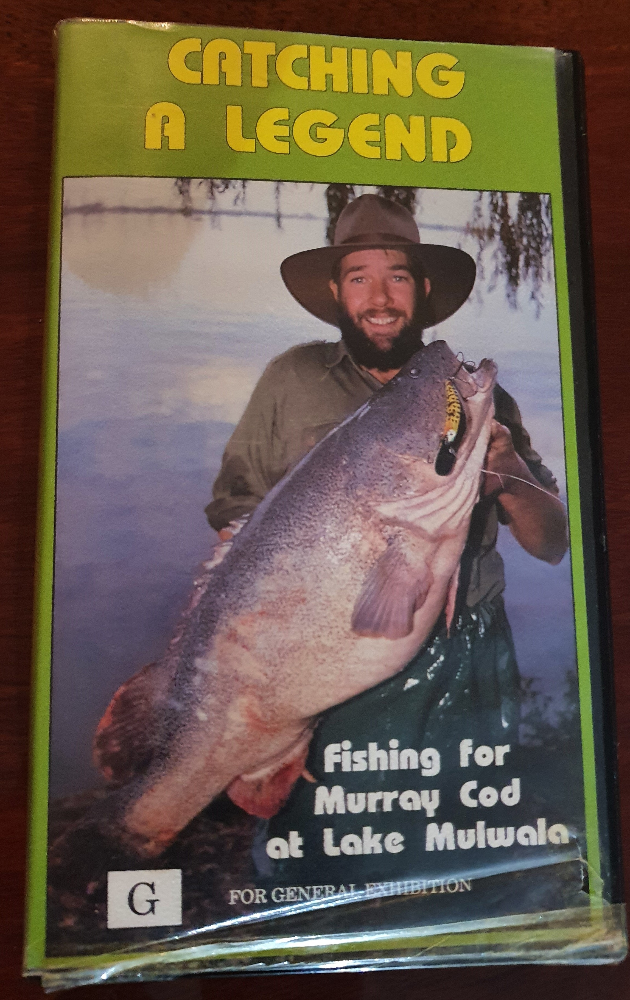
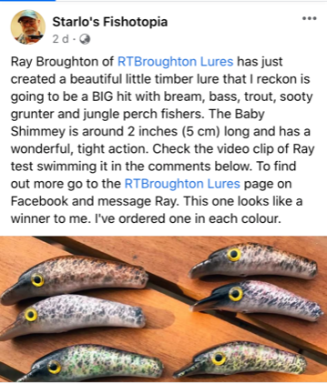
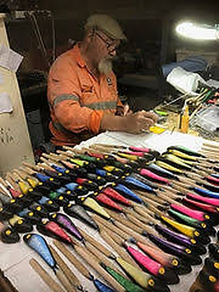

Home / The Story
The legend.
Ray Broughton is the original designer and manufacturer of RTB Legend Lures — the timber lures that built a reputation on Murray Cod at Lake Mulwala.
It started with a video.
Back in 1991, while Ray was proprietor of the Mulwala Shoreline Caravan Park, he starred in his video Catching a Legend, made with experienced fishermen Bill Classon and Fred Jobson. After that he started designing and making Legend Lures.
Fishing had been Ray's passion since his dad, Ron, taught him how to fish when he was a young fella.
In 1992 he started manufacturing Legend Lures on a large scale. These lures targeted freshwater and saltwater species alike — the popularity of the RTB Legend Lure was the stuff of legends.
Ray stopped large-scale manufacturing in the mid-90s due to the economy at the time: people stopped purchasing high-end lures. He continued to make lures for his own fishing.
Back at the bench.
In 2020 Ray rediscovered his passion for designing and making lures. He started crafting timber lures that are attractive to look at, swim perfectly, and most importantly attract and catch a large variety of fish.
Today every RTBroughton lure is timber crafted in Ray's workshop in Bargara, Queensland, and every one is hand painted. Decades of knowledge — and testing what does and does not work — goes into deciding colours, though lures can be custom painted.
Every single lure that Ray makes is unique and no two lures will be the same.

- 1991Catching a Legend, filmed while Ray ran the Mulwala Shoreline Caravan Park. Design work on the Legend Lures follows.
- 1992Large-scale manufacturing begins. RTB Legend Lures earn a name on Murray Cod at Lake Mulwala.
- Mid-90sLarge-scale production stops as the market for high-end lures tightens. Ray keeps making lures for himself.
- 2020Ray returns to lure making, crafting a new range of timber lures in Queensland.
- NowShaker, Mover and Shimmey ranges — 51 lures, all hand painted in Bargara.

Steve Starling
Old lure makers are coming out of the woodwork (pun intended). Latest blast from the past is Ray Broughton... Ray's a terrific bloke and a very talented lure designer/crafter.Starlo's Fishtopia — Facebook
Why timber?
Lures were traditionally made either with timber or metal. Then over time came the mass-produced plastic lures.
Timber lures work so much better than plastic as no two pieces of timber are the same. When using lures it's about attracting the fish to strike. With timber lures one's action may not attract a fish, however the next lure will move slightly differently, float a little more or less, and this attracts fish.
RTBroughton Lures are all timber crafted in Ray's workshop in Bargara. Ray's passion and experience in making lures that attract fish is a skill honed over 40 years of lure making.

The workshop
Bargara, Queensland.
Shaped, painted and finished by one pair of hands. Each lure is hand painted, so colour runs and grain vary from lure to lure — that is the point.
Want a colour you have not seen in the shop? Ray takes custom paintwork enquiries directly.
Talk to RayTalk lures
Ray loves a chat.
If you want to discuss the range, a custom colour, or a lure you remember from the Legend days, pick up the phone.
raytb@me.com · Bargara, Queensland